Как начинается
личная вещь?
С повода, чувства, формы или привычки. Здесь двенадцать разных структур страниц и сценариев взаимодействия. У всех работает конструктор; каждая концепция по-своему приводит к нему.
Мельница
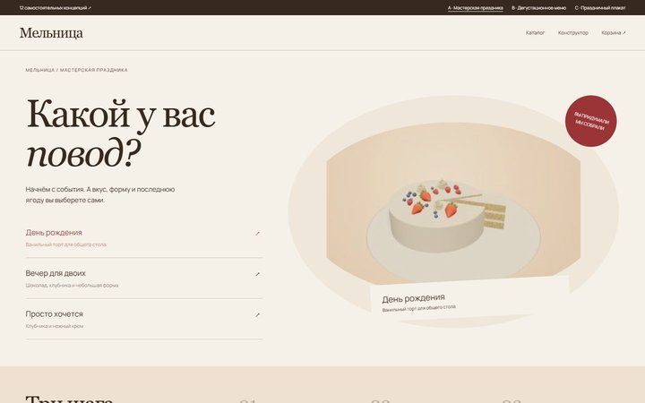
Мастерская праздника
Сценарий начинается с события. Выбор повода меняет стартовый рецепт; торт и короткий маршрут сборки стоят на первом экране.
Попробовать сценарий ↗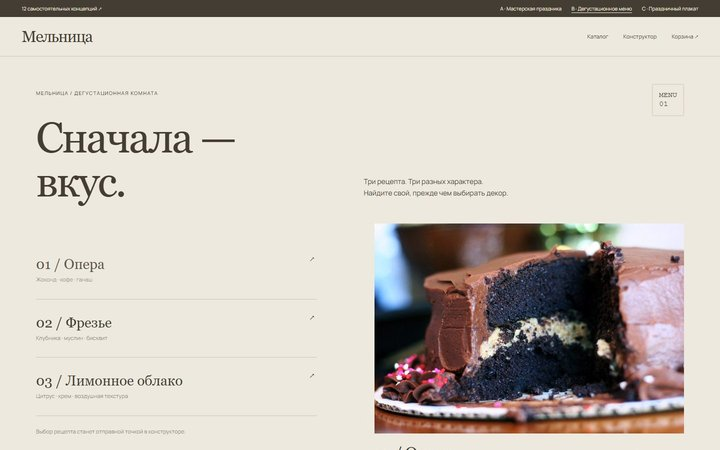
Дегустационное меню
Сайт как меню кондитерского ресторана: рецепты, слои, вкусовые заметки и интерактивная дегустация.
Попробовать сценарий ↗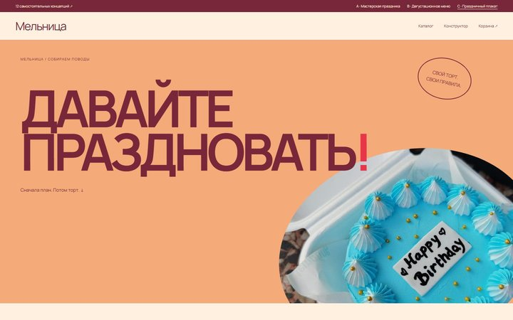
Праздничный плакат
Графичный постер и планировщик события: дата, повод и список пожеланий. Подача через праздник, а не витрину.
Попробовать сценарий ↗Пион
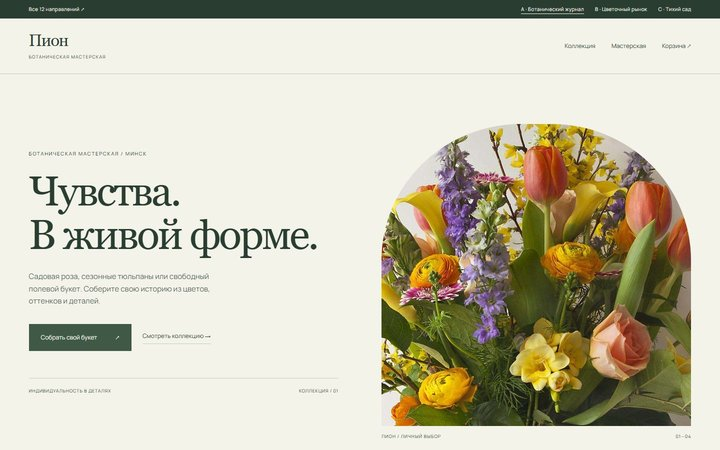
Цветочный бар
Сайт как стол флориста: выбор сезонного направления, ботанические карточки и рабочая композиция.
Попробовать сценарий ↗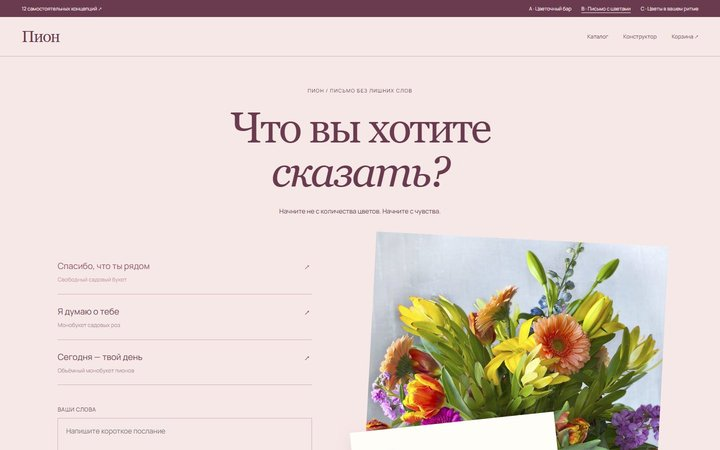
Письмо с цветами
Подарочный сценарий: сначала чувство и текст открытки, затем букет. Живая открытка — центр интерфейса.
Попробовать сценарий ↗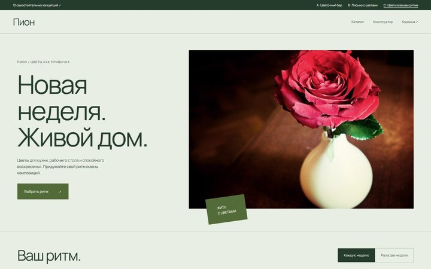
Цветы в вашем ритме
Редакция о цветах дома: календарь смены букетов и выбор ритма. Сценарий регулярного обновления интерьера.
Попробовать сценарий ↗Латунь
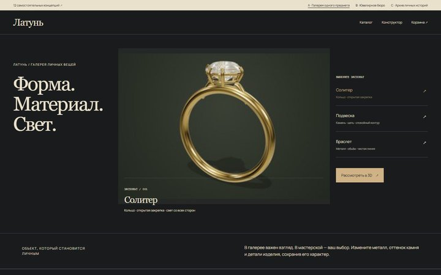
Галерея одного предмета
Музейный просмотр: один предмет занимает экран, смена экспоната и описание формы предшествуют каталогу.
Попробовать сценарий ↗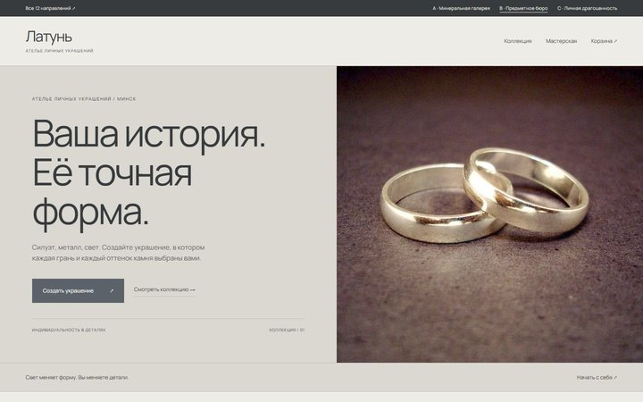
Ювелирное бюро
Сайт как проектный стол: силуэт, камень, закрепка, карточка спецификации и переход к сборке.
Попробовать сценарий ↗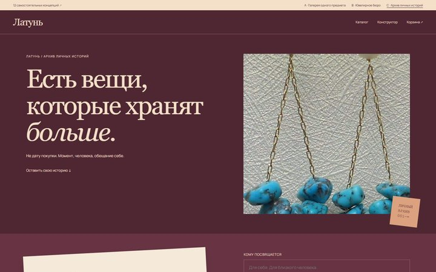
Архив личных историй
Украшение как памятная вещь: личная запись, выбор символа и архив заметок. Объект возникает из истории.
Попробовать сценарий ↗ЛИНИЯ
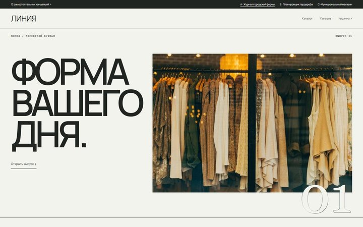
Журнал городской формы
Редакционный журнал с крупными номерами выпусков, разворотами и подборками образов.
Попробовать сценарий ↗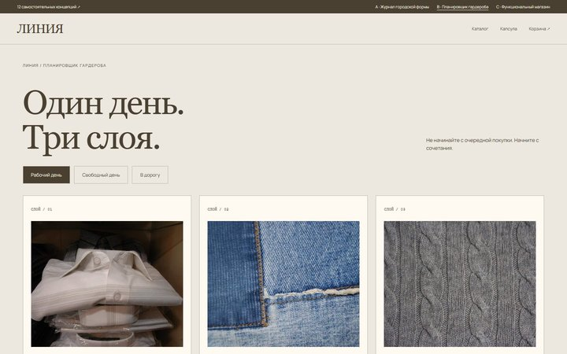
Планировщик гардероба
Рабочая доска из трёх слоёв: выбор контекста меняет комплект. Пользователь собирает гардероб, а не листает рекламу.
Попробовать сценарий ↗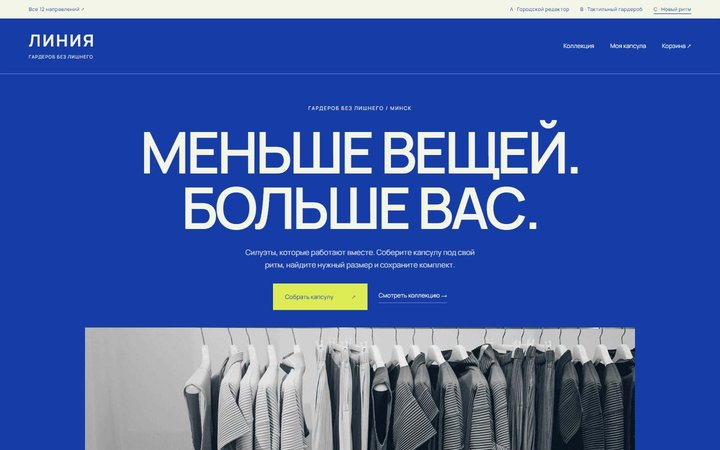
Функциональный магазин
Каталог на первом экране: поиск, категории, сортировка и реальные позиции. Капсула — отдельный инструмент выбора.
Попробовать сценарий ↗